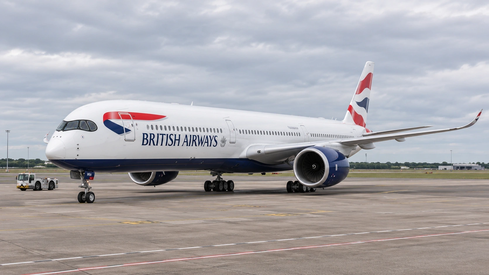

British Airways Owner IAG Earns More Revenue but Less Profit as Fuel Costs Climb
Third-quarter revenue rose 4.5%, but operating profit fell 15.9%. Premium demand and fuel hedges have cushioned the pressure without eliminating it.

International Airlines Group, the owner of British Airways, reported a 15.9% fall in third-quarter operating profit before exceptional items on November 6, even as revenue increased. The figures show an airline group retaining pricing power but losing part of the benefit to higher fuel costs and operational disruption. Selling more revenue from an established network did not translate into more operating earnings.
Quarterly revenue reached €9.744 billion, up 4.5% from a year earlier. Operating profit before exceptional items fell to €1.726 billion from €2.053 billion. IAG maintained its full-year target for an operating margin before exceptional items of at least 12%, while now expecting annual capacity to be slightly below 2025. That forecast describes a tighter flying program, rather than a simple continuation of growth.
For U.S. readers, the North Atlantic is a particularly relevant part of the report. The group’s network includes British Airways, Iberia and Aer Lingus, alongside its other airlines. Changes in how it allocates capacity and prices long-haul seats affect a major set of connections between North America and Europe, although a group earnings release cannot predict the fare on an individual route.
Pricing strength meets a larger fuel bill
The operating margin before exceptional items was 17.7%, compared with 22.0% in the same quarter last year. That is a decline of 4.3 percentage points. A positive margin still means the business produced operating profit; the deterioration shows that the company retained less of each euro of revenue after the relevant operating costs.
IAG’s report says third-quarter fuel costs increased 30.4%, after the benefit of hedging. Non-fuel costs per unit of capacity also rose, by 3.4%. The combination is more informative than either measure alone. Fuel is a large variable expense, while disruption and lower-than-planned flying can make staffing, aircraft and other commitments more expensive per unit of service delivered.
Jet fuel also has its own market economics. A change in the price of crude oil does not necessarily produce an identical change in an airline’s delivered fuel bill. Refining, supply conditions, currency and contract timing can all matter. TTN’s explanation of the crack spread describes why a refined product and its crude input can move differently. For an airline shareholder, a crude-price headline is therefore an incomplete cost forecast.
Hedges change timing, not the need to buy fuel
Reuters reported that IAG expects a total fuel bill of €8.9 billion for 2026. It said the group was 71% hedged for the remainder of this year and 45% hedged for 2027. These are coverage measures for different periods, not a statement that the same share of all operating expenses has been fixed.
Hedging can reduce exposure to an abrupt price movement, but it does not make fuel free or erase every difference between a financial contract and actual consumption. The volume an airline ultimately flies still matters. If schedules change, the relationship between forecast fuel needs and existing hedges can change with them. Comparing airlines solely on their hedge percentages would also miss differences in contract prices and maturity dates.
That makes the capacity outlook part of the financial story. A reduction in flying can avoid weak routes and preserve earnings, yet it can also leave some commitments spread over fewer seats. The commercial benefit depends on which capacity is removed and whether the remaining network supports better revenue relative to its cost. Capacity discipline is a decision about returns, not automatically a sign of either success or failure.
The Atlantic offers support, with limits
IAG disclosed an 11.0% increase in North Atlantic unit revenue during the quarter, with capacity broadly flat. The result supports management’s account of stronger pricing in an important market. It does not establish that every cabin, route or customer segment improved equally, and a quarterly regional average should not be mistaken for a universal increase in ticket prices.
The distinction between higher prices and higher profit is central to interpreting this release. A stronger fare mix can help absorb costs while still leaving the operating margin below last year’s level. As TTN’s guide to reading company earnings against expectations explains, the relevant assessment combines the completed quarter with the assumptions management is making about the period ahead.
Capital returns add another claim on the business’s cash. IAG says the final €500 million tranche of its €1.5 billion buyback program has commenced, with completion expected by the end of February 2027. That is part of an existing program, rather than a newly announced €1.5 billion purchase. Our buyback explainer distinguishes an authorization, a tranche in progress and shares actually repurchased.
The maintained margin target gives investors a benchmark for the remaining quarter. Whether it is met will depend on the balance between fares, flying, fuel and operational costs. Cash generation also matters because aircraft investment and shareholder distributions compete for funding. The difference between accounting profit and free cash flow remains relevant even when demand looks firm: a resilient sales line alone cannot establish how much money is available after the airline has funded its commitments.